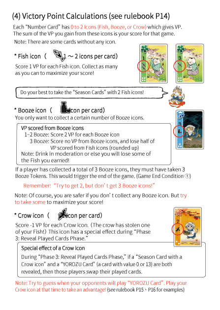

萬貓的慶典
Festival of Thousand Cats
遊戲設計：福夕郎
美術插畫：ナカヤマ皐月
遊戲人數：3-4人
遊戲時間：20-40分鐘
建議售價：820元
美術插畫：ナカヤマ皐月
遊戲人數：3-4人
遊戲時間：20-40分鐘
建議售價：820元
Designer：Fukutarou
Artist：Satsuki Nakayama
Players：3-4人
Playing Time：20-40分鐘
MSRP：NT$820
立即購買
Artist：Satsuki Nakayama
Players：3-4人
Playing Time：20-40分鐘
MSRP：NT$820
遊戲簡介：
一年到頭，全國各地無數的貓咪們都在忙著準備宴會。而在宴會中，絕對不可缺少的就是美味的「魚」以及珍藏已久的「好酒」。只要有下酒菜以及好酒，所有的貓咪們都會感到非常的幸福。不過要小心，就算是非常喜歡喝酒的貓咪們，喝太多酒也還是會醉倒的(適量飲酒，有益健康)！好好地收集「魚」和「好酒」，一起享受宴會吧!
一年到頭，全國各地無數的貓咪們都在忙著準備宴會。而在宴會中，絕對不可缺少的就是美味的「魚」以及珍藏已久的「好酒」。只要有下酒菜以及好酒，所有的貓咪們都會感到非常的幸福。不過要小心，就算是非常喜歡喝酒的貓咪們，喝太多酒也還是會醉倒的(適量飲酒，有益健康)！好好地收集「魚」和「好酒」，一起享受宴會吧!
Story:
Cats all over the country are always looking for their next feast. They love “Fish” and they can’t celebrate without “Booze”.As long as they have those two, they are all happy! Be careful though! Even cats will get plastered if they drink too much! (Always drink responsibly!) Enjoy the feast by collecting “Fish” and “Booze”!
Cats all over the country are always looking for their next feast. They love “Fish” and they can’t celebrate without “Booze”.As long as they have those two, they are all happy! Be careful though! Even cats will get plastered if they drink too much! (Always drink responsibly!) Enjoy the feast by collecting “Fish” and “Booze”!
內容物：
2 本說明書 (中/英)
38 張數字牌
12 張無季節牌
12 張分數加倍牌
4 張玩家幫助卡
1 張計分卡
1 張季節卡
16 個季節加倍指示物
4 個季節指示物
8 個分數指示物
10 個好酒指示物
2 本說明書 (中/英)
38 張數字牌
12 張無季節牌
12 張分數加倍牌
4 張玩家幫助卡
1 張計分卡
1 張季節卡
16 個季節加倍指示物
4 個季節指示物
8 個分數指示物
10 個好酒指示物
Contents:
2 Rulebooks (CN/EN)
38 Number Cards
12 No More Season Cards
12 Score Multiplier Cards
4 Player Aids
1 Score Sheet
1 Season Marker Sheet
16 Season Multiplier Tokens
4 Season Tokens
8 Point Tokens
10 Booze Tokens
2 Rulebooks (CN/EN)
38 Number Cards
12 No More Season Cards
12 Score Multiplier Cards
4 Player Aids
1 Score Sheet
1 Season Marker Sheet
16 Season Multiplier Tokens
4 Season Tokens
8 Point Tokens
10 Booze Tokens





尚無相關評論